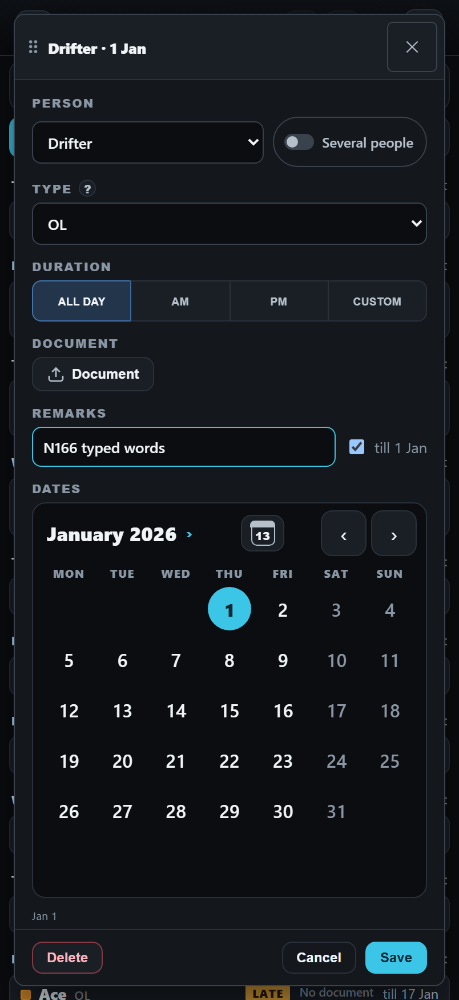
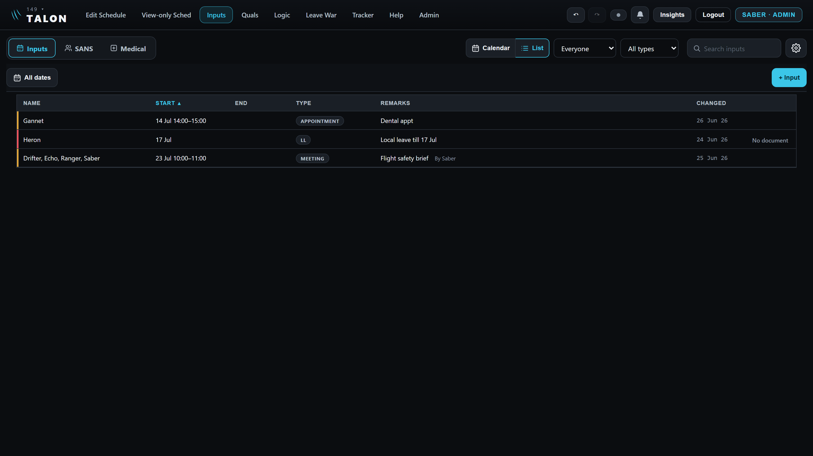

The guard rail at a squadron switch
Your rulings: while a window is open, picking another squadron or switching to or from the member view is refused, with a note to close the window first. When the squadron in view or your rights change without your press, the app stops under one note with a Refresh button. Every picture is the real app. "Today" is what happens now; "After" is the note drawn on top. Tap a picture to enlarge it.
1. The refusal note
Example: an input of Drifter's is open with words typed in it, and you pick 149. Today the window greys out and says "This is 142's. You picked 149 — close this to go on." After: nothing changes and the window stays live with your words in it. The app's usual grey note appears at the foot of the screen.
Pick a squadron: Blocked: close the open window, then pick 149.
Switch to the member view: Blocked: close the open window, then switch to the member view. (Back: "…then switch back to the admin view.")
A bell line that leads to the other squadron: Blocked: close the open window, then press this line again.
Words drafted by Opus and adjusted by a fresh Fable. The note says "the open window" rather than naming it: an input's title ("Drifter · 1 Jan") reads badly in a sentence, and the window is right in front of you. On a phone an input window covers the squadron control, so the note will mostly appear on a desktop.
 Also coming, already ruled (not a question): unsaved Tracker chart edits are now asked about at the member-view switch too. Today nothing is asked there.
Also coming, already ruled (not a question): unsaved Tracker chart edits are now asked about at the member-view switch too. Today nothing is asked there.
2. The refresh note
Example: you are moved to 149 at midnight while an input is open. Today the window greys out and says only "This change could not be saved." After: the whole app dims, and one card in the middle asks you to refresh. It has one button, Refresh. Anything not saved is lost, and the card says so.
Your own move at midnight: You are 149's from today. "Your move to 149 took effect at midnight. Refresh and sign in again to carry on. Anything you hadn't saved is lost."
A right taken away: Your access has changed. "An admin changed what you can do here. Refresh and sign in again to carry on. Anything you hadn't saved is lost."
The Tracker failing partway through a switch: The switch to 149 didn't finish. "The Tracker stopped partway. Refresh and sign in again. Anything you hadn't saved is lost."
"Sign in again" is there because in this build a refresh brings back the sign-in screen. Once the app is in Power Apps there is no sign-in, and the words become "Refresh to carry on." A right taken away in another tab is not noticed in this build until a reload. It will be once the database is in.
3. Log out with a window open
Example: an input is open and the Tracker has unsaved chart edits. You press Logout. Today the app moves to the Tracker and asks "Save them before logging out?", but the input window is drawn on top of that question, so you cannot press Discard until you cancel the window. On a phone the ☰ menu is under the window, so Logout cannot be reached at all.
Recommended: refuse Logout while a window is open, with the same grey note ("close the open window, then log out"). The other way is to let Logout close the window, losing its typed words, and then ask about the chart. That is quicker, but it throws words away without asking.
 Today: desktop. Logout pressed, and the input window stands over the Tracker's question.
Today: desktop. Logout pressed, and the input window stands over the Tracker's question.

Today, phone: the ☰ menu is under the window.
If yes, the note's words are drafted and checked, then drawn, before it is built.
4. Undo after picking another squadron
Example: on 142 you change Drifter's OL, then pick 149. On 149 the Undo button still offers that 142 change. Pressing it takes back 142's record while you look at 149, and the bubble says only "Undid: Drifter's OL". Drifter's row even appeared in 149's list afterwards.
Recommended: Undo and Redo reach only the squadron you are looking at. Your 142 steps wait, and are there again when you pick 142. The other way is to keep one list and name the squadron ("Undid: Drifter's OL · 142"). But then you take back something you cannot see.
 Today: on 149, before Undo.
Today: on 149, before Undo.
 Today: after Undo on 149. Drifter's 142 row shows in 149's list.
Today: after Undo on 149. Drifter's 142 row shows in 149's list.
5. A change that did not save, then a pick
Example: you save a 142 input, the save fails, and the band says "Not saved — keep this page open" with Retry. You pick 149 anyway. The band and its Retry follow you to 149, and Retry there saves 142's change.
Recommended: refuse the pick while a change is not saved, with the grey note asking you to press Retry first. That keeps the unsaved change and the squadron it belongs to together. Today the save does reach the right record, but nothing on 149 says it is 142's.
 Today: on 149, with 142's "Not saved" band and Retry.
Today: on 149, with 142's "Not saved" band and Retry.

Today: after Retry on 149. 142's change is saved.
Also found when every case was pressed
These need no answer now. A SANS day window stays open after a pick and quietly shows 149's figures under the same date; the guard will refuse that pick. A day's note typed on Edit Schedule and then a pick saves into 142's note, where it was typed. A sign-in name being typed on Admin → Users is lost at a pick without asking; the guard rail could cover that too, and it goes in the build's walk. Coming next, in its own round: the Tracker drag questions, drawn first.